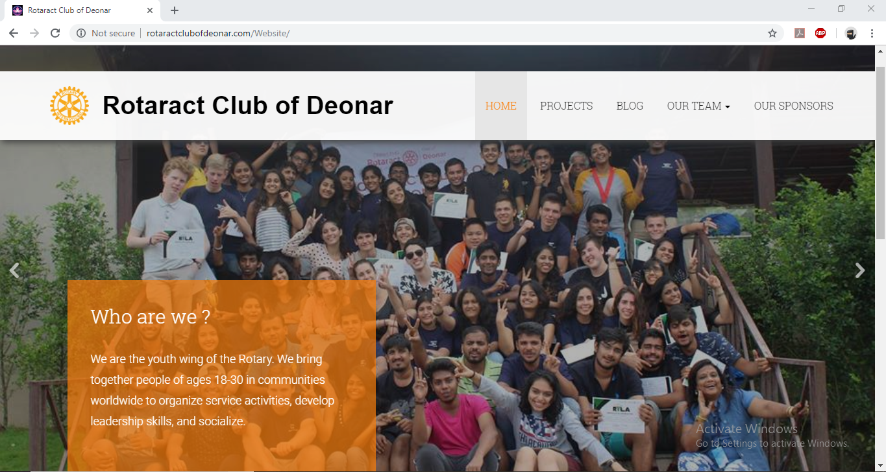
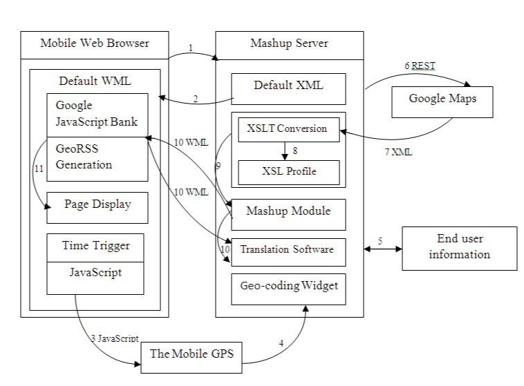
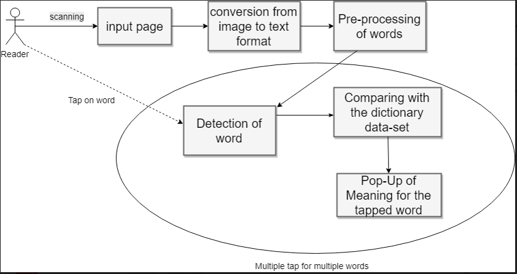
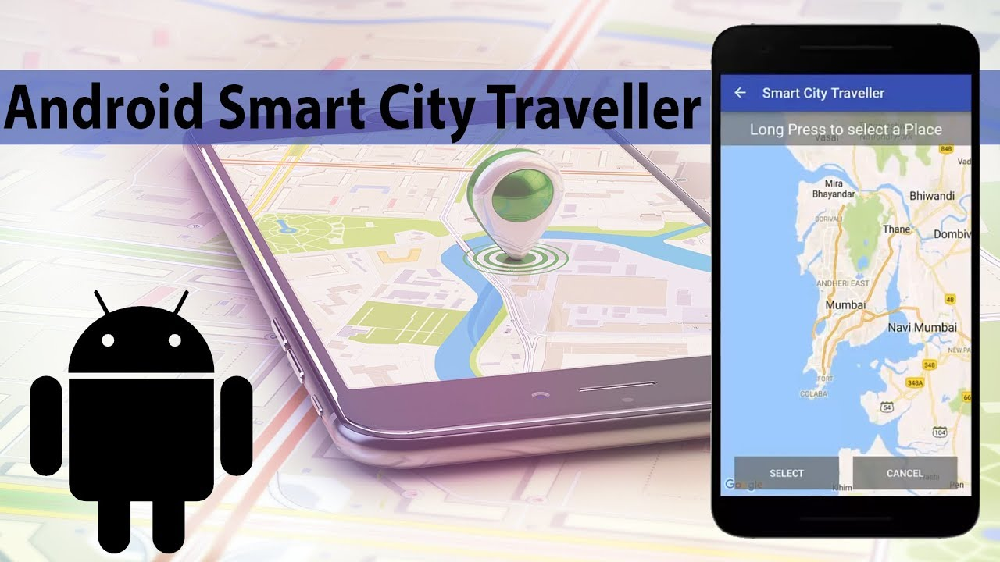
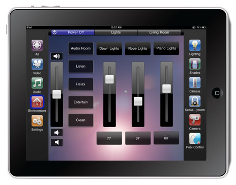
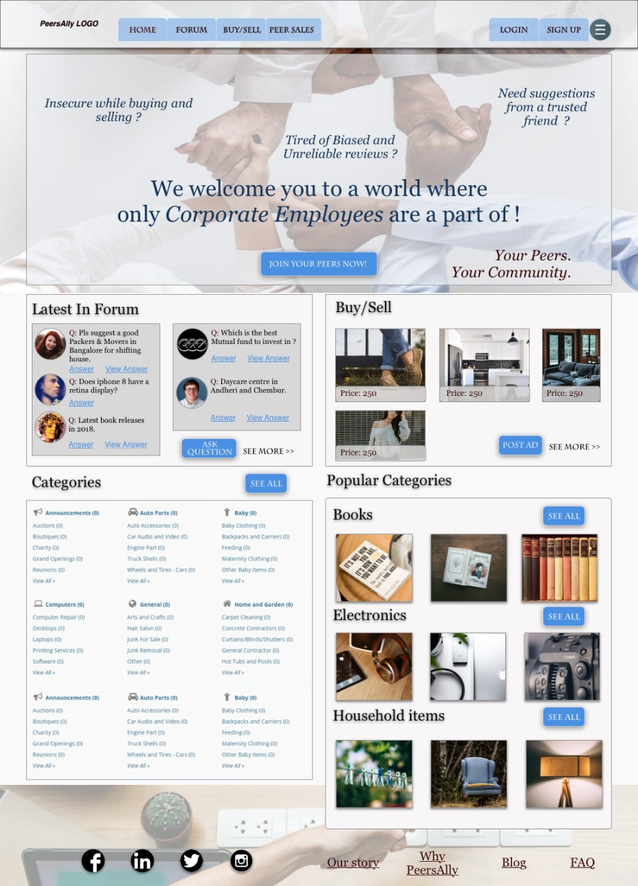
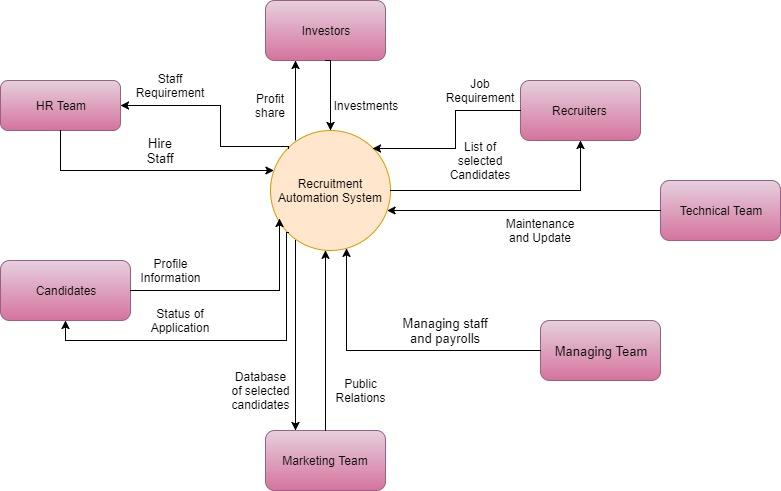

Hi! I'm Pooja Vazirani,
an aspiring UX Designer/ Researcher.
Project Details

Rotaract Club of Deonar
Designed and built offical club website
About:
The website was built and developed so that the organization can set its mark digitally. The site comprises a six page dynamically responsive webpage. It presents data about the social organization, the projects done by them, the stakeholders and the team running the foundation.
Challenges:
The organization has a team of thirty people coming from various background and age groups. This made it hard to get a person with the required expertise to confer. Through self- learning, I learned the necessary languages to design and build the website.
Technologies Used:
Bootstrap 3 Responsive Design HTML5 CSS3 JavaScript jQuery
Visit Live SiteProject Details

Vehicle Tracking and Counting
Image Processing and Digital Signal Processing
Problem Statement:
Traffic management and information systems depend mainly on sensors for estimating the traffic parameters. In addition to vehicle counts, a much larger set of traffic parameters like vehicle classifications, lane changes, etc., can be computed.
Solution:
Two common themes associated with tracking traffic movement and recognizing accident information from real time video sequences are: 1) The video information must be segmented and turned into vehicles. 2)The behavior of these vehicles are monitored (they are tracked) for immediate decision making purposes.Mechanism:
Vehicle detection and counting uses a single camera mounted usually on a pole or other tall structure, looking down on the traffic scene. The system requires only the camera calibration parameters and direction of traffic for initialization.
Tools Used:
MATLAB
Project Details

WordPop
Tap to know more
About:
The project is based on the development of an android based application that uses optical character recognition to transfer text from physical to digital sources and generate a user-friendly vocabulary tool. The existing solutions are time consuming, inconvenient and are restricted to only provide with meanings.
Solution:
The project offers a simple one click, time saving and a user friendly interface which offers versatile options such as antonyms, examples along with synonyms.
Methodology:
The methodology employed is as follows: Step 1: Data collection and dataset preparation. Step 2: Developing an image processing technique for conversions. Step 3: Training and experimentation on datasets. Step 4: Deployment and analysis on real life scenario.
APIs used:
Google Vision Text API Codelab AABBY OCR Engine Dictionary API
Project Details

Smart City Traveler
Android Application
Problem Statement:
The primary purpose of developing this android application is to create a schedule for the traveler travelling to a city and wanting to explore the city by specifying the time in hours.
Solution:
The proposed application is capable enough to search the place automatically based on FourSquare API. This application also helps you to find the places nearby you or around the world.
After searching a place, the map will show the details such as name, area, location, phone no. & kilometers from the current location of the user. The application employs behavioral and pattern analysis to generate user specific travel itineraries.
Mechanism:
The system analyzes a questionnaire and creates a schedule for the traveler based on the given time. The development is done in Java for Android Application for User/Traveler. MySql acts as a relational database and retrieves a query through tables. It stores data about the places, timings the user visits, the likes and dislikes of the user.
Steps:
Step 1: The traveler needs to register himself by filling up the details using android application. Step 2: After successful registration, user can login now using login credentials which then proceeds with questionnaire where application ask user about their likings and habits. Step 3: Based on questionnaire, application smartly analyzes for the place based on user specified time.
Tools Used:
MySQL FpurSquare API Java
Project Details

Home Automation
Artificial Intelligence
Problem Statement:
With the introduction of Artificial Intelligence to home automation, the living space of the user can be controlled without the touch of a button either centrally or remotely. The proposed Intelligent System continuously learns and adapts to the users preferences.
Solution:
The project aims at controlling, managing and coordinating the day-to-day home appliances in a comfortable, effective and secure way. In addition, the Intelligent System also performs the work of a Personal Assistant and has additional modules such as News, Shopping etc. to let the user access data remotely.
Mechanisim:
Modules for switching on the light, switching off the light, making it dim were made for the internal lighting system. Depending on the timing, person and the given room, light changes accordingly. The language used to develop the project was Python.
Technologies Used:
OpenCv Tensorflow Python
Project Details

UX/UI Internship
PeersAlly, Banglore
Roles and Responsibilities:
As an intern, I was required to redesign the company’s homepage. I used Sketch 3 Software to make the wireframe of the webpage. Apart from the header and footer the webpage was divided into five parts. The top is an eye-catching banner about the company and a link to join the peers. Latest in Forum is the second part open for questions, suggestions and review of products from trusted website.
Buy/Sell is the third part which shows all types of product on sale. All Categories is the fourth part, where customers can easily search for products categorized alphabetically.
Popular Categories is the fifth part which shows trending or popular categories of product. This depends on the number of clicks of the employees on any category.
Experience:
Other than the technical knowledge, I gained knowledge of the dynamics and collaboration in working for a corporate organization, identifying the needs of a client, and the processes involved in redesigning a website. The intership proved to be learning one.
Softwares Used:
Sketch 3 Photoshop
Visit Live SiteProject Details

Recruitment Automation System
Structured Object Oriented Analysis and Design
Problem Statement:
Some of the problems faced are the limited options available for the recruitment team to search the best candidate, 88% of resumes received are considered unqualified and to top it all a recruiter spends 23 hours on average for screening resumes for a single hire.
Solution:
Recruitment automation applied to resume screening promises to be a boon to reduce time to hire because it automates a low-value, repetitive task that most recruiters hate to do anyway. Automated resume screening allows recruiters to re-focus their time on higher value priorities such as talking to candidates to assess their personalities and culture fit.Mechanism:
Using different analytics tools and machine learning algorithms, the application allows to search for a better candidate required for the specified hire. As the system needs to learn from its previous hiring decisions, it uses pattern analysis on the large dataset acquired.
Algorithms Used:
Linear Regression Naive Bayes K-Nearest Neighbors
About Me
Hi, I am Pooja Vazirani, currently pursuing my masters degree in Human Computer Interaction from Indiana University-Purdue University-Indianpolis, USA. Outside of academics, I have been involved with Rotaract Club of Deonar, Mumbai, India for the past four years working towards social change. My goal is to work towards making better accessible products that benefit the society. Listening to music, Sketching and travelling are few activites that I do in my liesure time.